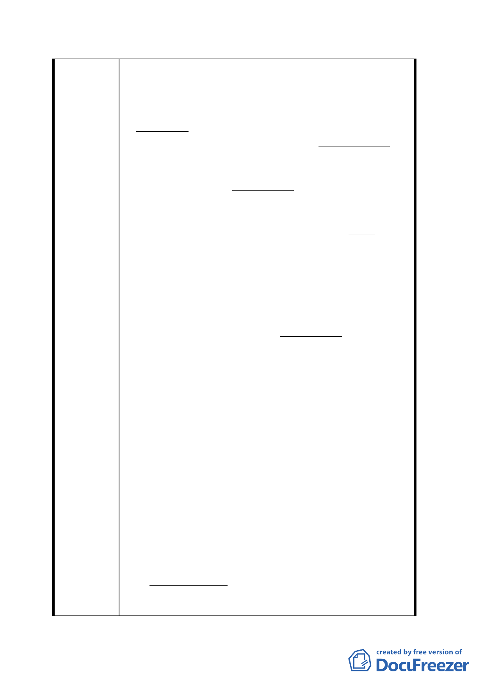

有新近來自大陸之新來人、但其戸籍資料與實際情
形卻大有差異、無疑幕後有某種組織在掌控。
１．貴陽街側合法建築物基地：沿貴陽街側合法建
築物、與廣場用地之衆多違章建築物基地〔以下簡
稱漢中基地〕互無任何直接或間接関係、理應割開
分別處理。如條件符合國有財産法第 52 條之 2 規
定、各合法建築物所有権人、依法當可獲准承購建
築基地。
２．A 類違建戸： A 類違建戸為自認各項條件能符
合、而有肯定意願向國有財産局、申請承購各自建
築物基地者。如所提出申請之條件符合、國有財産
法第 52 條之 2 之規定、國有財産局可依特案接受、
以團体自願互相連帯具保申請承購違建基地。核准
其承購與出售其餘土地、両者必須互連併案辦理。
依此類申請承購基地者、自行先組成互助團体、
暫稱漢中基地承購互助會、若獲准承購基地、承購
人願意按毎坪新台幤壹拾萬元（暫定）自動提供做
為漢中互助基金、以協助未申請承購基地而決定自
願他遷之違建戸（以下簡稱 B 類違建戸）、補助搬遷
之用。
３．B 類違建戸：應自行組織互助團体、暫稱“漢
中搬遷互助會”互選総幹事及副総幹事各一人、協
助會員間之連絡及負責承辦與會員搬遷相関之各項
事務。
４．公開協議標購其餘土地：公開招募有意競購漢
中土地者、依往例先繳付保證金後、始得参與標購
前各項條件及情況之商議。標購價應含毎坪新台幤
壹拾萬元（暫定）提供為漢中互助基金。各項條件
及其他細則商定後、擧行購地投標。得標者可另與
（１）貴陽街合法建築物基地承購人、及（2）漢中
境内 A 類違建戸基地承購人、洽商合建、整合或讓
售土地事宜、相富有弾性。
5. 原西本願寺：在另建議之西門社活動中心大樓
之頂樓、似可將西本願寺原貌復元、如圓山大飯店
之頂樓、以配合保留古蹟之需求。
上述折衷替代方案有下列優点：
１． 完全随従廣場計畫案、境内居民之意願、
而無違反民意而強制拆屋之非民主大動作。
二八